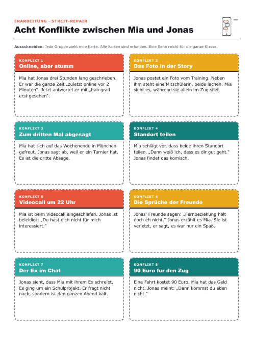
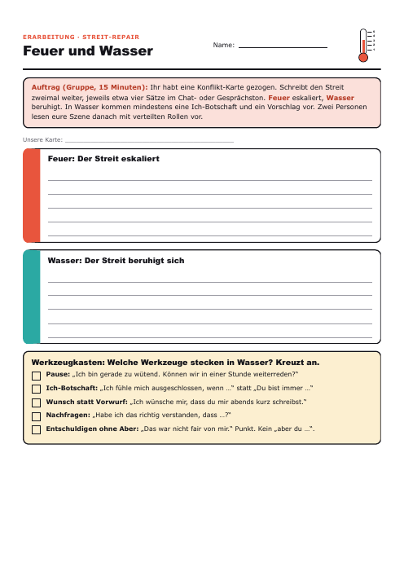
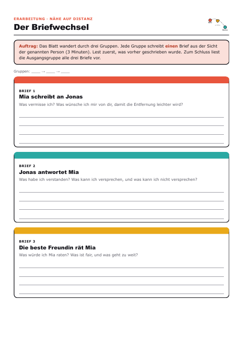
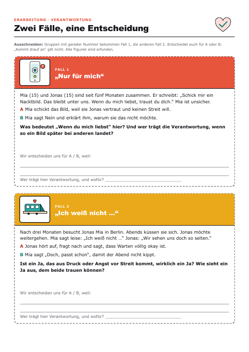
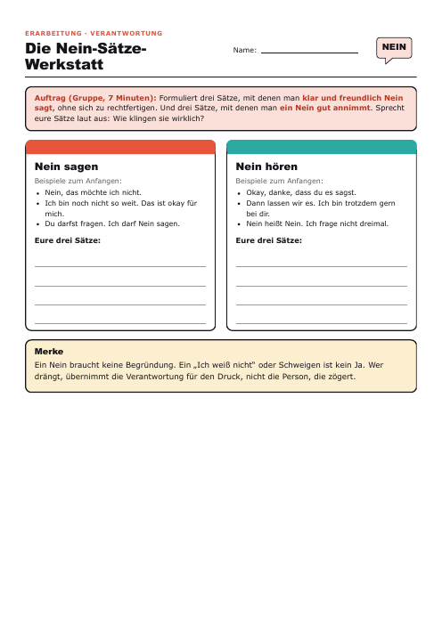

Eine Doppelstunde (90 Minuten) in drei Folgen um Mia und Jonas, die 500 Kilometer auseinander wohnen: Streit im Chat, Nähe auf Distanz und die Frage, wo Verantwortung in der Sexualität anfängt. Mit Fake-Chat, Vorlese-Szenen, Dilemma-Fällen und Nein-Sätze-Werkstatt.
Sechs Phasen. Jede Phase hat eine Impulsfrage, damit das Gespräch nicht nach der Aufgabe stoppt. Unten steht, was du als Lehrkraft vorbereiten solltest.
Tipp: Das ist der Einstieg ohne Material: Handy-Look wirkt echt, weil es ihr Alltag ist. Wer zu schnell „Mia ist schuld“ ruft, bekommt die Frage zurück: Was fühlt Jonas gerade?
Tipp: Vorlesen macht den Unterschied: Gespielt klingt „Du bist immer so“ plötzlich sehr echt. Wer nicht vorlesen mag, schreibt nur. Ein Pass ist immer erlaubt.
Tipp: Wer zögert, hält zuerst eine Karte hoch (Daumen) und stellt sich dann hin. Das nimmt den Gruppendruck. Die Passwort-Frage kennt die Klasse aus Stunde 3, hier geht es um Standort und Eifersucht.
Tipp: Perspektivwechsel statt Pro und Contra: Wer als Jonas oder als Freundin schreibt, muss die andere Seite ernst nehmen. Bei knapper Zeit nur die Ecken, den Briefwechsel mit Brief 1 und 2 kürzen.
Tipp: Die Fälle laufen über erfundene Personen, niemand muss etwas von sich erzählen. Bei Stille nicht nachbohren. Wenn ein Kommentar jemanden trifft, ruhig stoppen und auf die Regeln zeigen. Hilfenummern stehen auf der Folie und im Hefteintrag.
Tipp: Wenn die Zeit fehlt: Plakat in der nächsten Stunde fertigstellen, Hefteintrag als Hausaufgabe.
Vorbereitung, Gesprächsklima, Rechtslage, Reaktionen auf schwierige Wortmeldungen und was von der Vorlage übernommen wurde.
Klick, Pfeiltaste oder Wischen blendet den nächsten Schritt ein. Für die Klasse auf Vollbild stellen, die Folien passen sich jeder Größe an.
Jedes Blatt öffnet sich einzeln und lässt sich als PDF speichern. Fälle, Regeln und Werkzeugkasten laufen auch als Folie, dann brauchst du sie nicht zu kopieren.





| Blatt | Wie oft kopieren |
|---|---|
| Konflikt-Karten | 1 Seite (8 Karten, reicht für 8 Gruppen) |
| Arbeitsblatt Feuer und Wasser | 6 Seiten (eine pro Gruppe) oder nur als Folie |
| Briefwechsel | 6 Seiten (eine pro Gruppe) |
| Dilemma-Karten | 3 Seiten (je Fall eine Hälfte, reicht für 6 Gruppen) |
| Nein-Sätze-Werkstatt | 6 Seiten oder nur als Folie |
| Hefteintrag | 24 Seiten oder 0: als PDF in OneNote |
| Plakat-Vorlage | 1 Seite oder direkt aufs große Plakat |
| Gesprächsregeln | 1 Aushang oder nur als Folie |
Mit Folien statt Kopien und Hefteintrag in OneNote sind es etwa 20 Seiten.
Ethik 8, Stunde 4 der Sequenz „Liebe und Partnerschaft“. Fälle und Personen sind erfunden. Rechtlicher Stand 22.10.2026, keine Rechtsberatung.